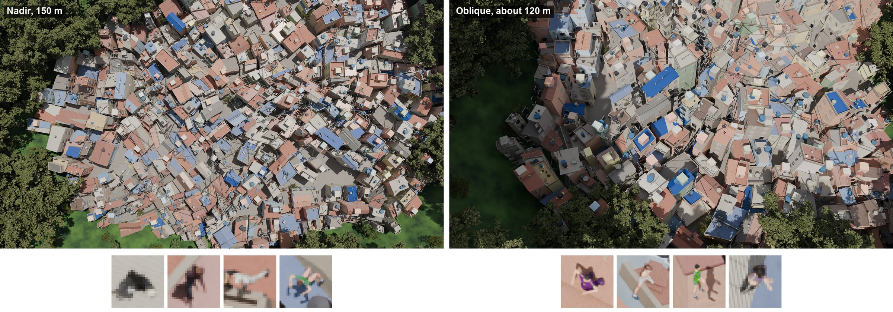
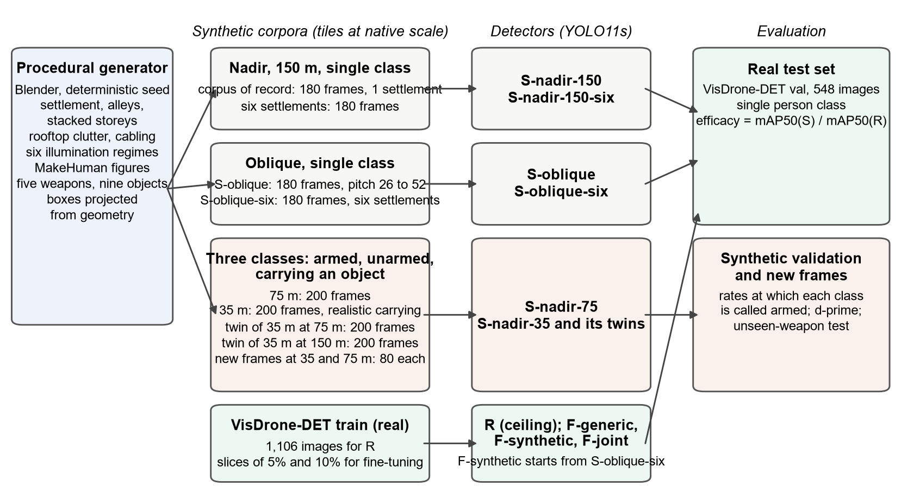
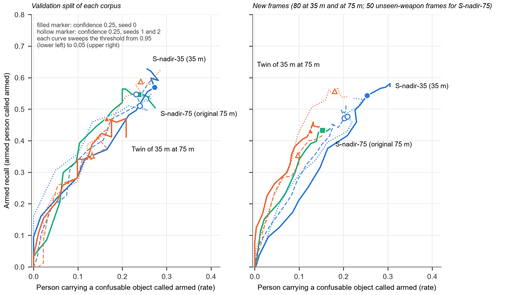

Luciano Martins Figueira and Hélio Arthur Reis Irigaray
Fundação Getulio Vargas, Brazilian School of Public and Business Administration (FGV EBAPE), Rio de Janeiro, Brazil
Abstract. Synthetic imagery is the route this study takes to a visual judgement that aerial systems are increasingly expected to support over the favelas of Rio de Janeiro, whether a person on the ground is armed, because the alternatives are closed: imagery of residents cannot be collected with meaningful consent, and no public benchmark shows a favela or annotates a carried firearm at survey altitude. Public security operations in these territories are among the most lethal in Brazil, and the decision to use lethal force is taken here to turn on that judgement. What reaches a detector is decided before any algorithm is chosen, by the altitude, lens, camera angle and light of each flight, and we treat that as a measurable question. On procedurally generated corpora of a dense favela, with no imagery of any real territory, we characterised the target by ground sampling distance (GSD), camera pitch and illumination, trained detectors on synthetic imagery alone and scored them against a ceiling trained on as many real images, on an urban, mostly oblique benchmark and on a nadir benchmark in wilderness; the confusion of firearms with ordinary elongated objects was measured synthetically. Straight down from 150 m (4.88 cm per pixel) a person spans 17.6 by 17.5 pixels and the widest firearm is one pixel wide. Synthetic-only training reached 2.2 per cent of the ceiling for that acquisition on the urban benchmark and 15.5 per cent with six settlements seen obliquely; on the nadir benchmark the order reversed, 68.2 against 45.8 per cent, with overlapping run ranges. Once a small fraction of real images was available, the synthetic corpus lowered accuracy, as pretraining and mixed in. On held-out synthetic frames the detectors called about one in five ordinary elongated objects armed at every GSD once the three were trained under the same budget, and when the objects were given the length of a firearm the separation vanished at 150 m and halved at 75 m: at the coarser GSD what the detector separates is length, not the form of a firearm. The GSD and viewing geometry at which a claim was tested, and the rate at which unarmed people are called armed, are what an aerial claim of an armed person must declare before it enters a decision to use force, and what a police command, the court that supervises operations and the residents can require of it.
Keywords: public security; public administration; algorithmic discretion; synthetic data; aerial object detection; ground sampling distance; dual use; informal settlements
Aerial systems already fly over policed territory in Rio de Janeiro: the Civil Police uses unmanned aerial vehicles (UAVs) for intelligence and real-time monitoring of operations (CNN, 2026) in which the decision to use lethal force is taken here to turn on one visual judgement, whether the person engaged is armed (Section 3.4). It is increasingly proposed that a camera above a city can make that distinction (Faheem et al., 2025; AlJundi et al., 2025; Kim et al., 2026); what such proposals rarely state, and what decides whether the distinction is visible at all, is the acquisition condition: altitude, sensor and lens, the ground sampling distance (GSD) they produce, the width of ground one pixel spans, the camera pitch, straight down (nadir) or oblique, and the illumination; a claim that omits it cannot be checked.
Favelas, the urban informal settlements of Brazil, are blind spots of official spatial data, and the technology that could map them can be turned on residents who never consented to being mapped (Gevaert, Persello, Sliuzas, & Vosselman, 2016; Watson & Elliott, 2025; West & Bowman, 2016). The Global South of the title names three conditions: no consented aerial imagery of the territory exists, so every training image is synthetic; the public benchmarks on which transfer can be measured show a dense city that is not a favela, mostly obliquely (Zhu et al., 2022), or people in wilderness seen from above (Božić-Štulić, Marušić, & Gotovac, 2019); and no public test set exists for what a person carries at the GSD of a survey flight.
The UAV literature closest to this problem plans trajectories and patrols over a city reduced to a street network, and UAV research on informal settlements serves mapping, not security (Gevaert et al., 2016; Sithole & Mhangara, 2025; da Silva, Kormann da Silva, & Westerholt, 2024); their intersection is the gap (Section 2.1). The public administration literature has followed what an instrument does to the officer's discretion (Selten, Robeer, & Grimmelikhuijsen, 2023; Meijer, Lorenz, & Wessels, 2021) on the premise that the instrument sees what it is said to see; over this terrain that premise is the open question (Section 3.3). Synthetic training for aerial detection transfers (Tobin et al., 2017) but recovers a fraction of what real data achieves for small aerial targets (Kiefer, Ott, & Zell, 2022), and nothing establishes how much a synthetic corpus of a dense settlement recovers on real imagery, under which acquisition parameters, or the scale at which what a person carries stops reaching a detector.
The objective is to measure what a detector trained on synthetic imagery alone recovers of the detection of the person, on which any armed and unarmed distinction rests, how the acquisition conditions move that fraction and, on synthetic nadir imagery, at which GSD a figure carrying a firearm can be told from one carrying an ordinary object. Three questions follow; Section 4.6 defines Experiments A to D.
RQ1. How much of the person-detection accuracy obtained with real training images does a detector trained only on synthetic imagery of a dense settlement recover on public real aerial benchmarks, and which parameters of acquisition and scene (camera pitch, apparent target size, settlement variety) determine that fraction? Experiment A answers it, and Experiment D adds how detection varies with illumination on synthetic frames.
RQ2. Once a small number of real training images is available, 5 or 10 per cent of the benchmark's training split, does the synthetic corpus add accuracy, as pretraining or mixed into the training set? Experiment B answers it.
RQ3. On synthetic imagery alone, at which GSDs (4.88, 2.44 and 1.14 cm per pixel from a nadir camera, which this article's altitude labels of 150, 75 and 35 m denote, Section 4.2.4) can a detector separate a person carrying a firearm from one carrying an ordinary elongated object, and at what rate does it call the latter armed? Experiment C answers it synthetically.
The article contributes a model-free characterisation of the aerial target by GSD, camera pitch and illumination; transfer fractions for person detection against a matched real ceiling on an urban and on a nadir benchmark, where the order of the two geometries reverses; a negative transfer (Z. Wang et al., 2019) once 5 or 10 per cent of real images existed, of the kind recorded for low-shot aerial training (Shen et al., 2023a, 2023b); a synthetic measurement of the confusion between firearms and ordinary elongated objects, with precedents near ground level (Pérez-Hernández et al., 2020; Torkst et al., 2026); and the position that stating the conditions under which a capability has not been shown is the contribution that bears on dual use (Sections 6.4 and 7).
The UAV literature closest to this study plans routes and patrols: route planning treats three-dimensional obstacles seriously (Rasoulie & Pashazadeh, 2026; Xu, 2025; Agrawal, Ratnoo, & Ghose, 2017), whereas aerial policing dissolves them into planar formulations over a street network or a set of patrol points (D. Wang & Qian, 2026; Chen, Liu, Hu, Zhang, & Pan, 2025; Yan, Hsieh, & Lai, 2025). Machine vision over informal settlements is a separate niche with planning and humanitarian purposes, mapping from satellite imagery (Gram-Hansen et al., 2019) or classifying a settlement from drone imagery, where dense buildings and steep terrain jointly challenge classification (Sithole & Mhangara, 2025; Gevaert et al., 2016). In mapping the vertical dimension enters as height for classifying the built fabric; in aerial policing it does not enter at all, and neither asks what a detector sees over that fabric.
This study draws on domain randomisation (Tobin et al., 2017; Prakash et al., 2019), applied to aerial detection with randomised textures (Barisic, Petric, & Bogdan, 2022). The reported benefit of synthetic data is conditional: gains have often been measured against ImageNet or random initialisation rather than against a detector already trained on real images of the target class (McCormac et al., 2017; Tremblay et al., 2018); the starting weights matter most when real data is scarce (He, Girshick, & Dollár, 2019); freezing a feature extractor pretrained on real images preserved detection (Hinterstoisser et al., 2019); and negative transfer (Z. Wang et al., 2019) recurs in aerial person detection, where synthetic pretraining scored below training from scratch on VisDrone (Yim et al., 2026) and mixing synthetic with real images fell below the real-only baseline in low-shot training (Shen et al., 2023a, 2023b).
The two real benchmarks used here are VisDrone-DET (Zhu et al., 2022), dense urban scenes seen mostly obliquely (Kiefer, Messmer, & Zell, 2021), and HERIDAL (Božić-Štulić, Marušić, & Gotovac, 2019), nadir imagery of people in natural terrain from 40 to 65 m. Kiefer, Ott, and Zell (2022) trained three detectors purely on 40,000 game-engine images matched to VisDrone's scenes and reported mAP50 (mean average precision at an intersection-over-union, IoU, threshold of 0.50) of 1.2, 2.4 and 10.2 against 24.6, 48.6 and 43.9 for the same architectures trained on the full real split, over 10 classes. Liao et al. (2026) locate where the synthetic fraction is won or lost for vehicles, in the origin of the geometry and in the variation of sun, weather and viewing angle (Section 6.2). Procedural favela layouts have a precedent as game content (Berwaldt, Bettker, & Pozzer, 2020).
A person seen from the air is a small object: the detector family of Section 4.5 computes its finest feature map at a stride of 8 pixels, so an instance whose shorter side falls below 8 pixels occupies less than one cell of that map (Hnoohom, Chotivatunyu, & Jitpattanakul, 2022). Illumination acts through contrast against clutter: building shadow obscures much of high-resolution urban imagery (Dare, 2005), one drone benchmark's vehicle detectors were worse in daylight than at night (D. Du et al., 2018), and survey specifications require cloud-free imagery and a minimum solar elevation (National Geodetic Survey, 2002; Royal Institution of Chartered Surveyors [RICS], 2021), a practice Section 6.3 revisits.
Weapon detection has its own benchmarks, none aerial at the altitudes of this study: those that annotate a carried firearm use surveillance viewpoints (Salazar González et al., 2020; Lim et al., 2021; Ruiz-Santaquiteria et al., 2024; Z. Li et al., 2025); the public aerial datasets that label a person as armed were captured 2 to 8 m above the ground and label an action or a recording, not a box (T. Li et al., 2021; Torkst et al., 2026); and the drone datasets with annotated firearms are restricted (Faheem et al., 2025) or unreleased (AlJundi et al., 2025). Setting weapons against objects handled the same way has precedents near ground level (Pérez-Hernández et al., 2020; Torkst et al., 2026), and Section 4.2.2 adopts that design.
Intentional homicide in Rio de Janeiro fell from 63.13 per 100,000 inhabitants in 1994 (Instituto de Segurança Pública do Rio de Janeiro [ISP-RJ], n.d.) to 17.1 in 2024 and 2025, while deaths from police intervention in the state rose from 703 in 2024 to 798 in 2025, 20.5 per cent of all intentional violent deaths (Fórum Brasileiro de Segurança Pública, 2025, 2026). On 6 May 2021 Operação Exceptis, by the Civil Police in Jacarezinho, killed 27 civilians and 1 officer (Human Rights Watch, 2021; Sullivan, Bunker, & da Cruz, 2021). Arguição de Descumprimento de Preceito Fundamental (ADPF) 635, before the Supreme Federal Court (STF) against police lethality in favelas since 2019, was concluded on 3 April 2025 with a state plan to reduce lethality partially validated (Agência Brasil, 2025; Supremo Tribunal Federal, 2025). On 28 October 2025 Operação Contenção, in the Complexo do Alemão and the Complexo da Penha, left 121 dead by the official count and 132 by the count of the state's Public Defender's Office (Couto & Figueiredo, 2025; Fichino, 2025; Fórum Brasileiro de Segurança Pública, 2026), the deadliest police operation on record in Brazil. Behind these episodes, criminal organisations hold durable control over particular favelas (Lessing, 2008; Misse, 2011) and narrow streets force special units to leave their armoured vehicles (Grillo, 2014); stacked construction that blocks lines of sight is the premise of this study, not a finding of those sources.
Jacarezinho, in the North Zone, is among the city's largest favelas, with an uncertain population: 29,766 residents in the 2022 census (Instituto Brasileiro de Geografia e Estatística, 2024), approximately 37,000 in municipal figures (RioOnWatch, 2019), more than 60,000 in community and journalistic sources (Mistler-Ferguson, 2022); the Comando Vermelho has long dominated it. Its morphology makes it the reference case: overlapping, vertically stacked construction; narrow alleyways; occupied or extended rooftop slabs (lajes); buildings with no standardised geometry; access routes absent from official maps; occlusion between structures. The synthetic settlements of Section 4.2 approximate this general morphology, not the geometry of Jacarezinho; no imagery or geometry of the territory enters them or any measurement.
The armed and unarmed judgement reaches an aerial system at the end of a movement from discretion reported after the fact to discretion mediated by instruments, which the public administration literature has followed step by step: the street-level officer's use of force (Alcadipani, Lotta, & Cohen, 2024); body-worn cameras (Headley, Baker, & Kang, 2025; Wright, Gaozhao, & Houston, 2024); predictive policing, used according to the practice around it (Meijer, Lorenz, & Wessels, 2021) and set aside when it contradicts the officer's own reading (Selten, Robeer, & Grimmelikhuijsen, 2023); the legitimacy the public grants a police force that uses artificial intelligence (Gao & Riccucci, 2026); and, with UAVs, surveillance and accountability (West & Bowman, 2016; Frazier, 2016). Every step takes the perception beneath it as given; over the terrain of Section 3.2, what reaches a camera is decided before any discretion or trust comes into play.
We take as a premise, not as a finding of the sources cited, that whether the person engaged was armed is a central category in decisions to use lethal force, a visual judgement made at speed among residents who are present throughout. The two errors are not symmetric: missing an armed person withholds a warning from the officers, whereas marking an unarmed resident as armed, because the resident carries a broom, a length of pipe or a rolled mat, supplies the category that justifies lethal force to a person who does not meet it. The rate at which a detector calls an ordinary carried object a weapon is therefore the quantity that matters ethically: Section 5.4 measures it, synthetically, and Section 6.4 reads it as the concrete form of the dual-use harm.
This is an experimental computational study in two parts: a characterisation of the aerial target without any detector (Section 4.4), and detectors trained on synthetic imagery alone, evaluated against a ceiling trained on real images where a public benchmark exists and on held-out synthetic frames where none does. Four constraints were fixed before any corpus was generated: no imagery, geometry or address-level coordinate of Jacarezinho enters the generator, the corpora or any measurement; the only real data are two public benchmarks; any future field data would require an independent ethics review and a community engagement process external to the police institution; and everything produced here is a measurement on synthetic imagery, never a validated operational tool. Synthesis is the ethical basis, since a resident asked to consent to aerial photography by or for the institution that conducts the operations of Section 3.1 can neither refuse freely nor foresee the use of the image; it does not resolve dual use, and the study releases neither corpora nor weights (Section 4.8).
Scenes are generated procedurally in Blender 5.2 (Blender Foundation, 2026), headless with a deterministic seed, and rendered with its Cycles path tracer; materials and trees are public domain (Poly Haven, n.d.), the human figures come from the CC0 assets of MakeHuman through MPFB (MakeHuman Community, 2026), and all other geometry is authored by the generator. No imagery or geometry of the territory enters it, so the corpus sits by construction on the generic side of the ablation of Liao et al. (2026), a cost Section 4.1 prevents us from measuring.
Layout has three stages: parcelling, a recursive binary partition of the built core in which most dwellings abut (the gap between lots is zero with probability 0.82, 0.5 to 1.2 m, the alley or beco, with 0.12, and wider with 0.06); orientation, a Voronoi division of the core into sub-districts with independent orientations, each lot rotated by up to 0.17 radians and every corner passed through a smooth domain warp; and vertical accretion, in which the upper floor of most dwellings of two or more storeys is smaller and offset to one boundary, and roofs carry water tanks, clotheslines, stair housings, satellite dishes, roofing sheets, rubble and exposed reinforcement bar. Six settlements differ in relief, forest cover, a corridor through the core, the palette of roofs and facades, the storey distribution and the share of vacant lots; settlement 1 is the one of every single-settlement corpus.
Each run builds a pool of six rigged, clothed meshes with MPFB, varied per body in sex, age, build, skin, hair and outfit and per instance in outfit colour, scale (0.92 to 1.08), heading and pose; 45 per cent stand on rooftop slabs (75 per cent in the 35 m corpus and its derivatives), the rest in alleys, 10 to 34 per frame. Three classes are annotated: armed (carrying a firearm), unarmed carrying nothing, and unarmed carrying an elongated object. Five firearms are built from boxes and cylinders, two rifles (recorded lengths 0.92 and 0.94 m), a carbine (0.62 m), a shotgun (1.05 m) and a pistol (0.20 m); against them stand nine objects spanning 0.88 to 2.5 m: brooms, floor squeegees, plastic pipe, reinforcement bar, planks, closed umbrellas, hoes, rolled mats and hose. Both draw from one palette of 11 materials, five shared and six only on objects, and both are carried through the same four poses (held forward, at the side, slung on the back, while walking), with an orientation fixed per pose; an object longer than 1.15 m, which no weapon is, is re-angled to rest on the shoulder or point to the ground. A detector may therefore separate the classes by length, by the materials only objects have or by carrying angle; the carried-as-weapon test of Experiment C neutralises the third, on the original 75 m corpus only, and the length-matched control the first. In the 35 m corpus and its derivatives the object takes a more realistic distribution of poses while the weapon keeps the original one, so that there the carrying pose is a fourth cue. A rifle of 1.10 m and a compact submachine gun of 0.55 m serve only the unseen-weapon test, and the pilot corpus and the corpus of record carry an earlier, smaller library.
Six lighting regimes each fix solar irradiance and colour, the angular diameter of the solar disc, a band of solar elevation, sky fill, scattering, aerosols and exposure: hard sun (elevation 46 to 74 degrees, disc 0.6 degrees), low sun (9 to 25, 0.9), overcast (30 to 70, 24), heavy overcast (28 to 66, 38), haze (22 to 52, 7) and rain (24 to 60, 32); above a disc of roughly 20 degrees the cast shadow effectively disappears, and no raindrop or wet surface is rendered. Each corpus sweeps the six regimes in order, and the regime of every image is recorded.
The virtual camera reproduces a commercially available UAV payload at its wide setting, the DJI Zenmuse Z30, a 1/2.8 inch sensor of 2.13 effective megapixels recording at 1920 by 1080 behind a 30 times optical zoom from 4.3 to 129 mm (DJI, 2019): a 4.3 mm lens on a 5.37 mm sensor, a horizontal field of view of 63.96 degrees at 16:9 and a ground width of 1.2488 times the altitude in nadir. The nadir camera points down within 3.5 degrees of vertical at a commanded altitude of 150, 75 or 35 m with a per-image jitter of up to 6 m (3 m at 35 m, 13 m in the twin at 150 m); the oblique camera flies at 120 m with a jitter of up to 36 m, at a pitch drawn per image between 26 and 52 degrees from the vertical (S-oblique) or between 45 and 56 (S-oblique-six). Figure 1 shows the same settlement under both, and Table 1 gives GSD and footprint by altitude and render size. The altitude labels of this article, 150, 75 and 35 m, denote the GSD that this camera reaches at that altitude when rendered at 3840 by 2160, 4.88, 2.44 and 1.14 cm per pixel; the same GSD is reachable from higher altitude by zooming, at the cost of footprint (Section 6.2). The renderer simulates no sensor noise, motion blur, depth of field, rolling shutter, chromatic aberration, vignetting or lens distortion; frames are lossless PNG, and training tiles are re-encoded once as JPEG at quality 92.
| Altitude (m) | Footprint (m × m) | Render (px) | GSD (cm/px) |
|---|---|---|---|
| 35 | 43.7 × 24.6 | 1920 × 1080 | 2.28 |
| 35 | 43.7 × 24.6 | 3840 × 2160 | 1.14 |
| 75 | 93.7 × 52.7 | 1920 × 1080 | 4.88 |
| 75 | 93.7 × 52.7 | 3840 × 2160 | 2.44 |
| 120, oblique preset | 149.9 × 84.3 (nominal) | 3840 × 2160 | 3.90 (nominal) |
| 150 | 187.3 × 105.4 | 1920 × 1080 | 9.76 |
| 150 | 187.3 × 105.4 | 3840 × 2160 | 4.88 |
For each figure the generator projects a subsample of the body and clothing vertices and every vertex of any carried item into image space and takes the axis-aligned extent, clipped to the frame: the box is amodal within the frame, as in the benchmark, includes the carried item and takes its class. Instances with a visible fraction below 0.35 under 14 rays cast from the camera, outside the frame or with a clipped side below 0.002 of the frame are discarded.

Table 2 lists every corpus. Training corpora are matched by frames, 180 single-class and 200 three-class; instance counts differ with the share of placed figures that survive the filter of Section 4.2.5, and S-oblique-six carries only figures carrying nothing. The real data is VisDrone-DET, with its pedestrian and people categories merged into one person class. Its validation split of 548 images is the test set of every single-class model, and no image of it enters training or selection. R trains on 1,106 images drawn at random from the training split (18,858 persons) and selects its checkpoint on a further 265 training images disjoint from both (Section 4.5); three further slices serve Experiment B: 5 per cent (324 images), 10 per cent (647, containing the first) and a disjoint selection slice of 324. The second real test set is HERIDAL (Pyrrö, Naseri, & Jung, 2021), in the version distributed by Pyrrö (2021), at an estimated 1.5 to 2.4 cm per pixel, the only public set found with person boxes on land and a declared nadir view; all 1,647 annotated images, with 3,229 persons, serve zero-shot evaluation only. Held-out frames (Table 2) were rendered after the models they test had been trained, continuing the seed of their corpus at the same frame indices across the 35 m corpus and its twins; the two 75 m sets are a new realisation of the settlement, one carrying the two unseen firearm models in half the firearms and the other re-rendering it with every confusable object carried exactly as a weapon.
| Corpus | Camera, altitude, GSD (cm/px) | Render (px) | Frames or images, train / val | Tiles, train / val | Instances, train | Instances, val |
|---|---|---|---|---|---|---|
| Pilot corpus | nadir, 150 m, 9.76 | 1920 × 1080 | 40 / 8 | 274 / 61 | 292 / 273 / n.a. | 55 / 64 / n.a. |
| S-nadir-150 (corpus of record) | nadir, 150 m, 4.88 | 3840 × 2160 | 149 / 31 | 1,106 / 225 | 1,331 / 1,328 / n.a. | 278 / 288 / n.a. |
| S-nadir-150-six | nadir, 150 m, 4.88; 6 settlements | 3840 × 2160 | 156 / 24 | 1,135 / 174 | 1,424 / 1,368 / n.a. | 203 / 233 / n.a. |
| S-oblique | oblique 26 to 52°, 120 m, 3.90 nominal | 3840 × 2160 | 155 / 25 | 968 / 136 | 839 / 841 / n.a. | 113 / 119 / n.a. |
| S-oblique-six | oblique 45 to 56°, 120 m, 3.90 nominal; 6 settlements | 3840 × 2160 | 152 / 28 | 890 / 144 | n.a. / 1,325 / n.a. | n.a. / 196 / n.a. |
| S-nadir-75 | nadir, 75 m, 2.44 | 3840 × 2160 | 173 / 27 | 1,316 / 202 | 816 / 820 / 846 | 117 / 153 / 135 |
| S-nadir-35 | nadir, 35 m, 1.14 | 3840 × 2160 | 165 / 35 | 1,166 / 242 | 640 / 587 / 619 | 137 / 119 / 121 |
| Twin at 75 m | nadir, 75 m, 2.44 | 3840 × 2160 | 176 / 24 | 1,287 / 176 | 650 / 638 / 701 | 85 / 92 / 91 |
| Twin at 150 m | nadir, 150 m, 4.88 | 3840 × 2160 | 173 / 27 | 1,215 / 180 | 692 / 619 / 640 | 92 / 104 / 101 |
| Held-out: new frames, 35 m | nadir, 35 m, 1.14 | 3840 × 2160 | 0 / 80 | not tiled | n.a. | 346 / 315 / 292 |
| Held-out: new frames, twin at 75 m | nadir, 75 m, 2.44 | 3840 × 2160 | 0 / 80 | not tiled | n.a. | 257 / 292 / 288 |
| Held-out: new frames, twin at 150 m | nadir, 150 m, 4.88 | 3840 × 2160 | 0 / 80 | not tiled | n.a. | 324 / 278 / 314 |
| Held-out: unseen-weapon test | nadir, 75 m, 2.44; new realisation | 3840 × 2160 | 0 / 50 | not tiled | n.a. | 256 / 222 / 230 |
| Held-out: carried-as-weapon re-render | nadir, 75 m, 2.44; new realisation | 3840 × 2160 | 0 / 50 | not tiled | n.a. | 256 / 222 / 231 |
| Held-out: per-regime test | nadir, 150 m, 4.88 | 3840 × 2160 | 0 / 120 | 0 / 885 | n.a. | 1,085 / 1,119 / n.a. |
| VisDrone-DET train, full | real | mixed; 1400 × 1050 most common | 6,471 / n.a. | n.a. | 106,396 persons | n.a. |
| VisDrone-DET val (test set) | real | mixed; 408 of 548 at 1360 × 765 | n.a. / 548 | n.a. | n.a. | 13,969 persons |
| R subset of train | real | as train | 1,106 / n.a. | n.a. | 18,858 persons | n.a. |
| 5 per cent slice of train | real | as train | 324 / n.a. | n.a. | 5,883 persons | n.a. |
| 10 per cent slice (contains the 5 per cent slice) | real | as train | 647 / n.a. | n.a. | 11,091 persons | n.a. |
| Selection slice (disjoint from both) | real | as train | n.a. / 324 | n.a. | n.a. | 5,886 persons |
| HERIDAL, every annotated image (second test set) | real, nadir, 40 to 65 m, 1.5 to 2.4 estimated | 4000 × 3000 | n.a. / 1,647 | n.a. | n.a. | 3,229 persons |
Three properties of the target are measured from annotations and rendered pixels alone: size by GSD, as the median dimensions of the annotated box at native resolution and the share of instances whose shorter side falls below 8 pixels, one stride of the detector's finest feature map; shape by camera pitch, as the height-to-width ratio of the box, with figures carrying nothing measured separately because a carried item widens the box; and contrast by regime, on the pilot corpus (48 frames, 8 per regime), as the mean luminance inside the box against a 6 pixel ring around it, divided by the standard deviation of that ring. A fourth measurement asks whether crops of the three classes separate at each GSD without any detector trained on the corpora: every annotated figure of the four three-class corpora is cropped with a 25 per cent margin, embedded by the frozen COCO-pretrained backbone of the detector and classified by nearest centroid under 5-fold cross-validation, scored by the rates of Section 4.7 and by the area under the receiver operating characteristic curve (AUC).
The detector is YOLO11s, the small member of the Ultralytics YOLO11 family (Jocher & Qiu, 2024), trained on one consumer GPU with 6 GB, from weights pretrained on COCO, a generic detection corpus of 80 classes (Lin et al., 2014), except for the synthetic-start fine-tuning models, which start from S-oblique-six. Synthetic training operates on 1280 pixel tiles cut at native scale with 20 per cent overlap, never on downscaled frames, which would take the median instance width at 150 m below one stride; the real-data models train on whole benchmark images resized to 1280 pixels on the long side, and the joint models on both. The shared settings are in the note to Table 3, and each synthetic frame goes to validation with probability 0.15, by frame, never by tile. The best checkpoint by mAP50-95 (Section 4.7) is kept on a selection split: the validation frames of its own corpus for a synthetic model, so that the benchmark never enters the selection of a single-class model; the selection slice for the fine-tuning and joint models; and, for R, the 265 images of Section 4.3, over 60 epochs without early stopping. R was first selected on the test set itself; the reported ceiling removes that bias (Section 5.2), and R still trains on the untuned shared schedule, so it is a ceiling for the protocol, not for the benchmark (Section 6.5).
Four experiments answer the research questions; Figure 2 shows how corpora, models and the two kinds of test set connect, and Table 3 lists the models.
Experiment A (zero-shot transfer; RQ1). R, S-nadir-150, S-nadir-150-six, S-oblique and S-oblique-six are scored on the same real test set, and every synthetic score is reported as a ratio to R. S-oblique changes only the camera, so the difference is read as the contribution of capture geometry; S-oblique-six adds six settlements and a pitch band matched to the benchmark's training split. Three checks accompany it: a scale-matched evaluation at an input size of 1,024 pixels, fixed beforehand; whether R performs near chance; and zero-shot scoring of all five models on HERIDAL at 1,152 pixels, also fixed beforehand. A fourth check retrains S-nadir-150 and S-oblique-six on training tiles of which three quarters carry signal-dependent Gaussian noise (standard deviation 0.4 to 1.8 per cent of full scale), blur of 0.3 to 1.2 pixels and JPEG compression at quality 50 to 90, validation tiles untouched, and scores them zero-shot on both benchmarks; a paired difference against the clean model whose interval excludes zero reads as sensor artefacts explaining part of the gap on that benchmark.
| Model | Training data | What it establishes |
|---|---|---|
| R | 1,106 real images drawn at random from VisDrone-DET train | the ceiling on the test set at matched volume |
| S-nadir-150 | the corpus of record: 1 settlement, nadir at 150 m, 6 regimes | the method at the reference acquisition |
| S-nadir-150-six | the same settings over 6 settlements | whether variety of settlement is a term in the gap |
| S-oblique | the same settlement and settings, oblique camera | whether failure is attributable to synthesis or to capture geometry |
| S-oblique-six | 6 settlements, pitch 45 to 56 degrees, figures carrying nothing | the synthetic model of this article, the synthetic arm with the highest zero-shot mAP50 on the real test set |
| S-oblique-six, settlement seeds 22 and 23; on 30 to 120 frames | the same command with the settlements drawn anew; nested subsets of its 152 training frames | the dispersion due to the scene; whether the number of frames is operant |
| F-synthetic, F-generic | 5 or 10% of VisDrone-DET train, from S-oblique-six or from COCO | what synthetic pretraining is worth once some real data exists |
| F-joint | the 890 training tiles of S-oblique-six with the same real images, from COCO | what the corpus is worth mixed with real data |
| F-synthetic, F-generic under 3 further schedules | as above, backbone frozen, learning rate ten times lower, or both | whether the cost of the synthetic start belongs to the schedule |
| Hard-sun-only model | 180 frames of the corpus of record's command under hard sun alone | whether a deficit under hard sun belongs to the regime or to its share of training |
| S-nadir-75 | 200 frames at 75 m, 3 classes | whether the armed and unarmed distinction is resolvable |
| S-nadir-35 and its twins at 75 and 150 m | 200 frames at 35 m with realistic carrying poses; the same corpus rendered at 75 and at 150 m | whether resolution or carrying pose drives the confusion; whether the distinction is measurable at 150 m |
Note. Shared training settings: input 1280 pixels; batch 6; AdamW with an initial learning rate of 0.002 (0.001429 for the three-class models) and linear decay; mosaic, horizontal flip, rotation up to 10 degrees, scale gain 0.4 and colour jitter as augmentation; 60 epochs for the synthetic models, 30 for the fine-tuning and joint models, 120 with patience 30 for the twin at 150 m, patience 15 otherwise; inference at confidence 0.001 and non-maximum suppression at IoU 0.7 (defaults, not tuned) for mAP, and three-class rates at confidence 0.25 on whole frames; training seed 0 with deterministic operations, seeds 1 and 2 for the repeated models.
Experiment B (limited real data; RQ2). On each slice, F-synthetic (from S-oblique-six) and F-generic (from COCO) train for 30 epochs, first under the same untuned schedule and then under a grid of four schedules crossing a trainable or frozen backbone with a learning rate of 0.002 or 0.0002; each start keeps the cell with the highest mAP50-95 on the selection slice, never on the test set. F-joint starts from COCO and trains for 30 epochs on the 890 training tiles of S-oblique-six with the same 324 or 647 real images. The quantity of interest is the difference at each volume between the model that uses the synthetic corpus and F-generic.
Experiment C (the armed and unarmed distinction by GSD; RQ3). S-nadir-75 is scored, as three classes, on its selection split and on the two 75 m held-out sets: the unseen-weapon test compares recall on the five training firearms with recall on the two unseen ones in the same 50 frames, and the carried-as-weapon test pairs the 227 confusable objects box for box between the two renders and compares the rate at which they are called armed as normally carried and when carried in the weapons' poses and angles. S-nadir-35 and its twins at 75 and 150 m, identical except in altitude, separate resolution from carrying pose: each is scored on 80 held-out frames that share their indices across corpora, the first two across three seeds and at IoU 0.50, 0.60 and 0.75, and the twin at 150 m after a second training of 120 epochs with a patience of 30. Two controls, each fixed in advance, follow: a budget control retrains the 35 m model and its twin at 75 m under that longer schedule and scores them on the same frames, and a length-matched control re-renders the twins at 75 and 150 m with every confusable object scaled along its length alone to between 0.62 and 1.05 m, the recorded lengths of the four long firearms, width, height and material unchanged; the model trained on each is scored on 80 new frames of the same kind, and each original model on the other's
frames.
Experiment D (illumination). S-nadir-150 is evaluated per regime on the 120 held-out frames of its settlement, as mAP50 on the tiles of each regime and recall at confidence 0.25 on whole frames; a model trained under hard sun alone is compared with it in recall under hard sun (D-i, descriptive) and against its overcast figure (D-ii, the one that decides). If the interval of D-ii lies wholly below zero and the specialist's mAP50 under hard sun stays below that overcast figure, the deficit belongs to the regime; otherwise to the share of hard sun in training.
Confirmatory against exploratory. The protocol grew in stages. Fixed before the first run: R, S-nadir-150, S-oblique and S-nadir-75, and the efficacy ratio to R on the urban benchmark. Every later model and test was added after earlier results were known, each with its criterion recorded before the run and stated in Section 5 with the result it decides. One rule was changed after its result was known, and is declared as such: as first written, a d′ interval at 150 m that excluded zero was to be read as a shortcut, on the argument that the form of a firearm is lost at that GSD; applied in October it read the twin at 150 m as a shortcut, and it was replaced in November, before the length-matched control had run, because no outcome could have failed it. The hypothesis fixed in its place, and tested in Section 5.4, is that the separation at 150 m rests on length: if the d′ interval of the length-matched model against objects includes zero, the separation at that GSD depended on length; if it excludes zero, form or material survives without it, and the fall against the original model measures how much of the separation length explained. R was also re-selected, after results were known, on a slice outside the test set, and every efficacy recomputed from it (Section 4.5). Still running when this version was written, each with its criterion fixed in advance: further seeds for the models trained once, the controls and the degraded models among them; the ceiling trained on the whole training split; the hard-sun specialist against a model trained on every regime but hard sun; and the firearm held in the hand rather than resting against the wrist. No acceptable false-alarm rate was fixed for RQ3: what rate of residents carrying a household object marked as armed is tolerable is a normative decision for the public authority and judicial control, not an engineering constant (Section 6.4).
Detection is scored by mAP50 and by mAP50-95, the same quantity averaged over IoU thresholds from 0.50 to 0.95, the fitness on which every checkpoint is selected. Efficacy is a synthetic model's mAP50 divided by R's on the same test set. The three-class models are scored on whole frames at native scale at confidence 0.25: predictions are matched one to one with annotated figures at IoU 0.50 without regard to class, each figure takes the class of its best-overlapping prediction, and an unmatched figure counts as not called armed, which makes each of the four rates that follow a lower bound: armed recall, the rate at which a confusable object is called armed (the object rate), the rate at which an unarmed person carrying nothing is called armed, and the precision of the armed class. Armed recall and the rate for the other class give d′, with the log-linear correction of Hautus (1995). The confidence threshold is swept from 0.05 to 0.95. Ten models were trained three times, every other model once. Intervals are 95 per cent percentile intervals from 1,000 resamples of benchmark images or of synthetic frames (2,000 for the per-regime recall of Experiment D), with paired differences and ratios on the same resamples. A difference is resolvable if the ranges of the two models over their three seeds do not overlap (reading a) or the 95 per cent interval of the paired difference excludes zero (reading b); a relative difference of 30 per cent of the smaller value is reported descriptively (reading c), and a difference that passes neither (a) nor (b) is reported as not resolvable.
Every generated image records its seed, regime, commanded and realised altitude and, in later corpora, its camera pitch, so the settlement, camera and illumination of every reported image are reproducible by the authors; the figures are reproducible only in corpora rendered after the figure generator began drawing from a seeded stream, and in the three rendered before that defect was found (the pilot corpus, the corpus of record and S-nadir-75) their placement and appearance cannot be regenerated exactly. Training is deterministic under a fixed seed. The procedural scene generator and its code are available from the authors on direct request; the corpora and the trained weights are not released. What a reader can check without them is each benchmark, the published specification of the reference camera and every parameter of Sections 4.2 to 4.7, which suffices to re-implement the protocol and approximate the generator, every asset being public
domain.
Table 4 collects every model with its test set and headline figure; Section 5.1 reports the model-free characterisation and Sections 5.2 to 5.5 Experiments A to D. Every check fixed in advance was run: the ceiling held, far from chance; the scale-matched check moved the nadir efficacy by a quarter of the protocol figure, below the half fixed as the sign of a confound; and no pre-specified comparison changed order under the official VisDrone toolkit rule for ignored regions or at IoU 0.60 and 0.75.

| Model | Training data (real images) | Test set | mAP50 (95% interval) | Efficacy (95% interval) |
|---|---|---|---|---|
| R, checkpoint selected outside the test set | 1,106 images of VisDrone-DET train (1,106) | VisDrone-DET val | 0.6224 (0.6069 to 0.6397) | ceiling; 0.6311 if selected on the test set, +0.0087 (+0.0035 to +0.0136) |
| S-nadir-150, mean of 3 seeds (best run) | 180 frames, 1 settlement, nadir, 4.88 cm/px (0) | VisDrone-DET val | 0.0136 (0.0120 to 0.0160); best 0.0198 | 2.2% (1.9 to 2.6); best 3.2% |
| S-nadir-150-six | 180 frames, 6 settlements, nadir, 4.88 cm/px (0) | VisDrone-DET val | 0.0190 (0.0142 to 0.0211) | 3.1% (2.3 to 3.4) |
| S-oblique, mean of 3 seeds (best run) | 180 frames, 1 settlement, oblique, 3.90 cm/px nominal (0) | VisDrone-DET val | 0.0555 (0.0502 to 0.0614); best 0.0614 | 8.9% (8.2 to 9.7); best 9.9% |
| S-oblique-six, mean of 3 seeds (best run) | 180 frames, 6 settlements, pitch 45 to 56 degrees (0) | VisDrone-DET val | 0.0966 (0.0896 to 0.1048); best 0.1055 | 15.5% (14.6 to 16.7); best 16.9% |
| F-synthetic, 5% (mean of 3 seeds) and 10% (first seed) | from S-oblique-six (324 and 647) | VisDrone-DET val | 0.4529 (0.4373 to 0.4696); 0.5095 (0.4935 to 0.5264) | 72.8% (71.2 to 74.0); 81.8% (80.6 to 83.0) |
| F-generic, 5% (mean of 3 seeds) and 10% (first seed) | from COCO weights (324 and 647) | VisDrone-DET val | 0.5245 (0.5075 to 0.5424); 0.5709 (0.5535 to 0.5883) | 84.3% (83.1 to 85.3); 91.7% (90.6 to 92.6) |
| F-generic, lower learning rate (chosen on the selection slice), 5 and 10% | from COCO weights (324 and 647) | VisDrone-DET val | 0.5897 (0.5748 to 0.6073), mean of 3 seeds; 0.6224 (0.6072 to 0.6396) | 94.8% (93.6 to 95.9); 100.0% (98.8 to 101.3) |
| F-joint, 5 and 10% | COCO weights, 890 synthetic tiles and the real images (324 and 647) | VisDrone-DET val | 0.4607 (0.4444 to 0.4789); 0.5428 (0.5259 to 0.5610) | 74.0% (72.6 to 75.5); 87.2% (86.0 to 88.3) |
| R on the nadir benchmark, checkpoint selected outside the test set | as above (1,106) | HERIDAL, 1,647 images | 0.2927 (0.2618 to 0.3247) | ceiling; 0.3185 if selected on the urban test set, +0.0258 (+0.0113 to +0.0421) |
| S-nadir-150 on the nadir benchmark, mean of 3 seeds | as above (0) | HERIDAL | 0.1997 (0.1713 to 0.2306) | 68.2% (59.0 to 78.9) |
| S-oblique on the nadir benchmark, mean of 3 seeds | as above (0) | HERIDAL | 0.1341 (0.1149 to 0.1555) | 45.8% (40.6 to 52.6) |
| S-nadir-75 | 200 frames, 3 classes, 2.44 cm/px (0) | selection split, 27 frames; held-out, 50 | 0.579; object rate 0.237; held-out 0.152 | not applicable |
| S-nadir-35 | 200 frames, 3 classes, 1.14 cm/px (0) | selection split, 35; held-out, 80 | 0.514; object rate 0.273; held-out 0.253 | not applicable |
| Twin of S-nadir-35 at 75 m | the 35 m corpus at 2.44 cm/px (0) | selection split, 24; held-out, 80 | 0.508; object rate 0.165; held-out 0.125 | not applicable |
| Twin of S-nadir-35 at 150 m, trained for longer | the 35 m corpus at 4.88 cm/px (0) | selection split, 27; held-out, 80 | 0.388; object rate 0.178; held-out 0.245 | not applicable |
| S-nadir-35 and its twin at 75 m, trained for longer (budget control) | the 35 m corpus at 1.14 and 2.44 cm/px (0) | selection split, 35 and 24; held-out, 80 | 0.499 and 0.521; object rate 0.248 and 0.220; held-out 0.192 and 0.222 | not applicable |
| Twin at 75 m, objects at firearm length (length-matched control) | the 75 m twin with every object 0.62 to 1.05 m long (0) | selection split, 28; held-out, 80 | 0.547; object rate 0.164; held-out 0.201 | not applicable |
| Twin at 150 m, objects at firearm length, trained for longer | the 150 m twin with every object 0.62 to 1.05 m long (0) | selection split, 20; held-out, 80 | 0.384; object rate 0.176; held-out 0.158 | not applicable |
GSD set the size of the target, camera pitch its shape and the illumination regime its contrast against local clutter (Table 5). Halving the GSD from 9.76 to 4.88 cm per pixel took the median long side from 10.1 to 20.6 pixels and the share of instances below one stride on the shorter side from 66.9 to 0.8 per cent, against 30.5 per cent in the benchmark and 0.9 and 3.9 in the two oblique corpora; in area the median synthetic instance at 4.88 cm per pixel (301 square pixels) matched the median benchmark instance (300), and at 2.44 and 1.14 the median instance measured 47.6 by 41.7 and 121.8 by 103.1 pixels. The two nadir corpora agreed on the height-to-width ratio to the second decimal, 0.98, against 1.95 and 2.20 on the two benchmark splits; in the oblique corpus the ratio rose with pitch from 1.28 at 26 to 30 degrees to 1.70 at 50 to 52.
The weapon is smaller still. Measured end to end on the meshes (the rifles and the shotgun run longer than their recorded lengths because stock and magazine lie outside them), the two rifles span 1.07 m, the shotgun 1.17, the carbine 0.61 and the pistol 0.20, and none is wider than 0.05 m. At 4.88 cm per pixel a rifle therefore covers about 22 pixels in length and one in width, at 2.44 about 44 by 2 and at 1.14 about 94 by 4; the pistol 4 by 0.6, 8 by 1.2 and 17 by 2.6. At 150 m the widest firearm in the corpus is one pixel wide and the pistol barely half of one: what survives the GSD is length, not form. These are extents of the mesh, not footprints in the frame, which depend on how the weapon is carried.
In the pilot corpus overcast gave the largest contrast over local clutter and hard sun and rain the two lowest, only the gap between the extremes approaching one standard deviation. Figure 3 shows what the detector receives at the three GSDs of Experiment C. Without any detector trained on the corpora the three classes barely separated: a nearest-centroid rule on frozen generic features reached a d′ of 0.23 to 0.46 against 0.67 to 0.90 for the detector on the selection splits, and the one structure present opposed figures carrying nothing to figures carrying anything.
| Corpus and geometry | Altitude, GSD (cm/px) | Median width | Median height | Median h/w | Instances | Shorter side below 8 px |
|---|---|---|---|---|---|---|
| Pilot corpus, nadir | 150 m, 9.76 | 8.3 px | 8.2 px | 0.98 | 565 | 66.9% |
| Corpus of record, nadir | 150 m, 4.88 | 17.6 px | 17.5 px | 0.98 | 3,225 | 0.8% |
| S-oblique, pitch 26 to 52 degrees, one settlement | 120 m, 3.90 nominal | 17.9 px | 26.4 px | 1.46 | 1,912 | 0.9% |
| S-oblique-six, pitch 45 to 56 degrees, six settlements, figures carrying nothing | 120 m, 3.90 nominal | 13.3 px | 25.2 px | 1.85 | 1,521 | 3.9% |
| VisDrone-DET train, real acquisition | not recorded | 13.0 px | 24.0 px | 1.95 | 106,396 | n.r. |
| VisDrone-DET val, real acquisition | not recorded | 12.0 px | 25.0 px | 2.20 | 13,969 | 30.5% |
n.r.: not reported in the full manuscript.
R reached mAP50 0.6224 (0.6069 to 0.6397) on the test set; selected on the test set itself it scored 0.6311, a bias of +0.0087 (+0.0035 to +0.0136) that the reported ceiling removes. S-nadir-150 scored 0.7915 on its own validation split and a mean of 0.0136 (0.0120 to 0.0160) on the benchmark over three seeds, an efficacy of 2.2 per cent (1.9 to 2.6). Six settlements in place of one raised the score to 0.0190, +0.0054 (+0.0009 to +0.0066) against the mean of the nadir runs and inside their range. Moving the camera to a pitch of 26 to 52 degrees with everything else held gave a mean of 0.0555 (0.0502 to 0.0614) over three seeds and an efficacy of 8.9 per cent (8.2 to 9.7); the paired difference on the means was +0.0419 (+0.0368 to +0.0470), a ratio of 4.08 on a denominator near the floor, with ranges that did not overlap. S-oblique-six, which changed settlements, pitch band, figures and camera placement together, reached a mean of 0.0966 and an efficacy of 15.5 per cent, +0.0411 (+0.0367 to +0.0462) above S-oblique with ranges that did not overlap, a step of the same absolute size. The dispersion over settlement seeds was 1.4 times that over training seeds, below the factor of 2 fixed as the sign that the scene dominates, and nested subsets of the training frames gave 0.0618 at 30 frames, 0.0904 at 120 and 0.0966 at 152, 0.0140 of mAP50 per doubling.
On HERIDAL, at the matched input size of 1,152 pixels (Table 6), R scored 0.2927 (0.2618 to 0.3247); the checkpoint selected on the urban test set scored 0.3185, +0.0258 (+0.0113 to +0.0421), 8.8 per cent against 1.4 on the urban benchmark, an advantage the reported ceiling removes. Against it the order of the two geometries reversed: S-nadir-150 reached 0.1997 on the mean of three runs, 68.2 per cent of R (59.0 to 78.9), and S-oblique 0.1341, 45.8 per cent (40.6 to 52.6), a difference of -0.0656 (-0.0840 to -0.0471) that passed the interval and relative readings but not the seed reading, the nadir runs spreading from 0.0926 to 0.2672 and overlapping the oblique runs; with six settlements the nadir model reached 0.2488, 85.0 per cent of R (73.2 to 98.2), against 0.1477 for S-oblique-six, 50.5 per cent (44.6 to 57.3).
Training on degraded tiles, the fourth check of Experiment A, moved the zero-shot scores by small amounts in no consistent direction, one training run per degraded model against the mean of the three clean runs: S-oblique-six rose by +0.0070 (+0.0022 to +0.0119) on the urban benchmark, 7.3 per cent, and S-nadir-150 by +0.0192 (+0.0077 to +0.0309) on HERIDAL, 9.6 per cent, while the other two cells did not move (-0.0004, -0.0019 to +0.0010; -0.0000, -0.0105 to +0.0096). Both gains lie inside the range of the three clean runs: the paired intervals measure variation over images with the trainings fixed, not over trainings, so sensor artefacts explain at most a small part of the gap, pending the further runs.
Given the 5 or 10 per cent slice of real images, the model that started from the synthetic weights finished below the generic start at both volumes, under the original schedule and under each of three others, and so did the model trained on synthetic and real images together (Tables 7 and 8, Figure 4). At 5 per cent the generic start led by +0.0716 (+0.0658 to +0.0780) on the means of three seeds and at 10 per cent by +0.0614 (+0.0553 to +0.0679); the expectation fixed before the run, that the difference would be largest at the smaller volume, failed in sign, the difference being most negative there and narrowing as real data grew. The joint models finished 0.0637 (0.0562 to 0.0700) and 0.0281 (0.0214 to 0.0346) below the generic start, beyond the margin fixed in advance.
In the schedule grid the control run reproduced the generic model exactly (0.5220), and under each schedule, at both volumes, the generic start lay above the synthetic one with an interval excluding
zero; with each start on the schedule its selection slice preferred, the generic lead widened to +0.1369 (+0.1290 to +0.1465) at 5 per cent and +0.1129 (+0.1044 to +0.1230) at 10 (Table
| Model | Runs | mAP50 at 1,152 (95% interval) | Range over runs | Share of R | mAP50 at 1,280 |
|---|---|---|---|---|---|
| R, checkpoint selected outside the test set (1,106 real images of VisDrone-DET train) | 1 | 0.2927 (0.2618 to 0.3247) | one run | 100% | 0.3026 |
| R, checkpoint selected on the urban test set | 1 | 0.3185 (0.2843 to 0.3543) | one run | 108.8% (103.8 to 114.5) | 0.3353 |
| S-nadir-150 | 3 | 0.1997 (0.1713 to 0.2306) | 0.0926 to 0.2672 | 68.2% (59.0 to 78.9) | 0.1682 |
| S-nadir-150-six | 1 | 0.2488 (0.2116 to 0.2865) | one run | 85.0% (73.2 to 98.2) | 0.2208 |
| S-oblique | 3 | 0.1341 (0.1149 to 0.1555) | 0.1092 to 0.1476 | 45.8% (40.6 to 52.6) | 0.1422 |
| S-oblique-six | 3 | 0.1477 (0.1265 to 0.1715) | 0.1079 to 0.1847 | 50.5% (44.6 to 57.3) | 0.1418 |
8).
At 2.44 and 1.14 cm per pixel the three-class detectors called between 0.165 and 0.273 of confusable objects armed on their selection splits (Table 10), and halving the GSD did not reduce that rate on matched corpora trained for 60 epochs, 0.253 against 0.125 on held-out frames (Table 11). The twin at 150 m passed its validity condition, fixed in advance as finding at least half of the annotated figures, only when trained for longer, finding 0.663 of them on its 80 held-out frames against 0.498 after the first training; there it called 0.457 of armed figures, 0.245 (0.204 to 0.289) of confusable objects and 0.205 of unarmed persons armed, a d′ against objects of 0.58 (0.38 to 0.78) against 0.97 for the twin at 75 m and 0.77 for the 35 m model on the same frame indices (Table 9), and figures carrying the 0.20 m pistol were called armed at 0.50.
| Slice, start | Original | Frozen backbone | Learning rate 0.0002 | Both |
|---|---|---|---|---|
| 5 per cent, synthetic | 0.4424 (0.1480) | 0.2808 (0.0901) | 0.3103 (0.1019) | 0.2028 (0.0585) |
| 5 per cent, generic | 0.5220 (0.1802) | 0.5467 (0.1886) | 0.5746 (0.2230) | 0.5410 (0.1915) |
| 10 per cent, synthetic | 0.5095 (0.1743) | 0.3209 (0.1053) | 0.3875 (0.1258) | 0.2241 (0.0681) |
| 10 per cent, generic | 0.5709 (0.1951) | 0.5772 (0.2030) | 0.6224 (0.2451) | 0.5644 (0.2001) |
| Real training data, seed | F-synthetic (from S-oblique-six) | F-generic (from COCO) | F-joint |
|---|---|---|---|
| 5 per cent (324 images), seed 0 | 0.4424 (0.4260 to 0.4587) | 0.5220 (0.5045 to 0.5403) | 0.4607 (0.4444 to 0.4789) |
| 5 per cent, seed 1 | 0.4608 (0.4441 to 0.4784) | 0.5228 (0.5056 to 0.5410) | trained once |
| 5 per cent, seed 2 | 0.4554 (0.4400 to 0.4721) | 0.5285 (0.5114 to 0.5474) | trained once |
| 10 per cent (647 images), seed 0 | 0.5095 (0.4935 to 0.5264) | 0.5709 (0.5535 to 0.5883) | 0.5428 (0.5259 to 0.5610) |
Under the same budget the advantage of the middle GSD did not hold. Trained for 120 epochs like the twin at 150 m, the 35 m model called 0.192 (0.152 to 0.236) of objects armed and the twin at 75 m 0.222 (0.174 to 0.271), against 0.245 at 150 m, and no difference between the three passed the interval reading; the twin at 75 m called more objects armed under the longer schedule, +0.088 (+0.044 to +0.131) on the same frames, and d′ against objects was 0.88, 0.85 and 0.58 at 1.14, 2.44 and 4.88 cm per pixel, the fall to 150 m passing only the relative reading (Table 9). By the rule fixed before the run, that the U stands only if the twin at 75 m under the longer schedule still calls fewer objects armed than both neighbours by the interval reading, the U across the three GSDs was in part an artefact of training budget; what stands is a false-alarm rate on everyday objects of 0.19 to 0.25 at every GSD. The length-matched control then tested what carried the separation that remained. With every confusable object scaled to between 0.62 and 1.05 m, the model trained at 150 m no longer separated armed figures from objects on its 80 new frames, d′ 0.12 (-0.09 to 0.32), against 0.58 for the original twin: by the rule fixed before the run, the separation at 4.88 cm per pixel depended on length. At 75 m the separation survived without length, d′ 0.44 (0.24 to 0.65), but fell by half, -0.53 (-0.82 to -0.25), and the object rate rose from 0.125 to 0.201 (0.150 to 0.255). Crossed, the original models scored on the length-matched frames measure how much of their false alarm length explains without retraining: the twin at 150 m called 0.368 (0.320 to 0.418) of objects of firearm length armed, against 0.245 of the original objects, and the twin at 75 m 0.208 (0.162 to 0.255) against 0.125. Each control model was trained once.
On the 50 held-out frames of the unseen-weapon test, S-nadir-75 called 0.434 of armed figures, 0.152 (0.113 to 0.196) of confusable objects and 0.068 of unarmed persons armed. Recall was 0.400 on the five training firearms and 0.466 on the two unseen ones, a ratio of 1.16 (approximate 95 per cent interval 0.88 to 1.54) against the threshold of 0.80 below which the 75 m figure was to be withdrawn. Among objects, the closed umbrella, 0.88 m long, was called armed at 0.38, brooms at 0.10 and lengths of pipe at 0.11; carrying every object in the weapons' poses and at their angles, matched box for box, moved the object rate from 0.154 to 0.137 (exact McNemar test, p = 0.56), so the reservation about carrying pose, to be withdrawn if the paired rate did not rise, was withdrawn.

| Quantity | S-nadir-75 (75 m, 2.44 cm/px) | S-nadir-35 (35 m, 1.14 cm/px) | Twin of S-nadir-35 at 75 m (2.44 cm/px) |
|---|---|---|---|
| mAP50, three classes | 0.579 | 0.514 | 0.508 |
| Recall, armed | 0.547 (0.476 to 0.627) | 0.569 (0.492 to 0.646) | 0.471 (0.397 to 0.558) |
| Precision, armed | 0.386 | 0.415 | 0.440 |
| Confusable object called armed | 0.237 (0.183 to 0.289) | 0.273 (0.202 to 0.353) | 0.165 (0.100 to 0.230) |
| Unarmed person carrying nothing called armed | 0.131 (0.073 to 0.188) | 0.168 (0.101 to 0.235) | 0.109 (0.044 to 0.174) |
| d′ against confusable objects | 0.83 (0.54 to 1.13) | 0.77 (0.46 to 1.10) | 0.89 (0.58 to 1.32) |
| d′ against unarmed persons | 1.23 | 1.12 | 1.14 |
Over three seeds the object-rate difference between S-nadir-35 and its twin held on the held-out frames, with separate ranges, while the armed and unarmed differences crossed zero. Sweeping the confidence threshold (Figure 5), the threshold that maximised the F1 of the armed class lay between 0.30 and 0.50 and raised the armed precision from 0.37 to 0.46 at the default to 0.47 to 0.66; at no threshold did any model exceed an armed recall of 0.65, and the highest armed recall at an object rate of 0.10 or below was 0.42.
| Model (GSD, cm/px) | Figures found | Armed called armed | Object called armed | Unarmed called armed | d′ vs object |
|---|---|---|---|---|---|
| S-nadir-35 (1.14) | 0.684 | 0.543 | 0.253 | 0.156 | 0.77 |
| Twin at 75 m (2.44) | 0.766 | 0.432 | 0.125 | 0.140 | 0.97 |
| Twin at 150 m (4.88) | 0.663 | 0.457 | 0.245 (0.204 to 0.289) | 0.205 | 0.58 (0.38 to 0.78) |
| S-nadir-35, 120 epochs (1.14) | 0.739 | 0.503 | 0.192 (0.152 to 0.236) | 0.137 | 0.88 (0.65 to 1.09) |
| Twin at 75 m, 120 epochs (2.44) | 0.761 | 0.537 | 0.222 (0.174 to 0.271) | 0.178 | 0.85 (0.65 to 1.07) |
| Twin at 75 m, objects at firearm length, on its new frames (2.44) | 0.806 | 0.347 | 0.201 (0.150 to 0.255) | 0.093 | 0.44 (0.24 to 0.65) |
| Twin at 75 m, original, on the length-matched frames (2.44) | 0.797 | 0.508 | 0.208 (0.162 to 0.255) | 0.146 | 0.83 (0.63 to 1.05) |
| Twin at 150 m, objects at firearm length, 120 epochs, on its new frames (4.88) | 0.623 | 0.188 | 0.158 (0.121 to 0.201) | 0.102 | 0.12 (-0.09 to 0.32) |
| Twin at 150 m, original, on the length-matched frames (4.88) | 0.710 | 0.464 | 0.368 (0.320 to 0.418) | 0.168 | 0.25 (0.03 to 0.44) |
On synthetic frames, hard sun was the weakest of the six regimes for S-nadir-150 on both measures and overcast the strongest on mAP50, level with low sun, whose shadows are as sharp (Table 12); on recall the hard-sun interval lay wholly below those of overcast, rain and low sun. The hard-sun specialist exceeded the model of all regimes on the same 20 hard-sun frames by +0.0818 (+0.0377 to +0.1243) in recall, but against that model under overcast, the comparison fixed as decisive, its recall differed by -0.0572 (-0.1252 to +0.0067), an interval that includes zero, and its mAP50 (0.7422) stayed below 0.7906, by 6.5 per cent.
| Quantity | S-nadir-35 (1.14 cm/px) | Twin at 75 m (2.44 cm/px) | Difference (95% interval) |
|---|---|---|---|
| Confusable object called armed, selection split | 0.273 | 0.165 | +0.108 (+0.015 to +0.211), p = 0.06 |
| Confusable object called armed, 80 held-out frames | 0.253 (74 of 292) | 0.125 (36 of 288) | +0.128 (+0.071 to +0.194), p = 0.0001 |
| Armed person called armed, selection split | 0.569 | 0.471 | +0.099 (-0.022 to +0.217), p = 0.15 |
| Armed person called armed, 80 held-out frames | 0.543 | 0.432 | +0.112 (+0.031 to +0.192) |
| Unarmed person called armed, selection split | 0.168 | 0.109 | +0.059 (-0.038 to +0.154), p = 0.22 |
| Unarmed person called armed, 80 held-out frames | 0.156 | 0.140 | +0.015 (-0.040 to +0.073) |
| d′ against confusable objects, selection split | 0.77 (0.46 to 1.10) | 0.89 (0.58 to 1.32) | |
| d′ against confusable objects, 80 held-out frames | 0.77 (0.57 to 0.99) | 0.97 (0.77 to 1.20) | |
| Object rate over three training seeds, selection split (range; mean) | 0.231 to 0.273; 0.248 | 0.132 to 0.242; 0.179 | ranges overlap; +0.068 (+0.002 to +0.142), 38.1% |
| Object rate over three training seeds, 80 held-out frames (range; mean) | 0.202 to 0.253; 0.222 | 0.097 to 0.181; 0.134 | ranges separate; +0.087 (+0.044 to +0.136), 64.9% |
| Object rate, selection split, at IoU 0.60 and 0.75 | 0.223 and 0.132 | 0.165 and 0.132 | level at 0.75 |
RQ1. Without real training images, detection on the urban benchmark reached 2.2 per cent of the ceiling for the reference acquisition, 8.9 with the same settlement seen obliquely and 15.5 for S-oblique-six; camera geometry moved the figure most, +0.0419 of mAP50, against +0.0411 for six settlements seen obliquely and +0.0054 at nadir, with apparent size matched, so what remains is the shape of the target (Section 6.2). On HERIDAL the order reversed, 68.2 against 45.8 per cent, by the interval and relative readings but not the seed reading, so on these two benchmarks the factor reads as the cost of a mismatch between the geometry of the corpus and that of the test set, with the reservations of Section 6.5. Kiefer, Ott, and Zell (2022) obtained 1.2 to 10.2 points of mAP50 on the same benchmark from game-engine images alone; S-oblique-six sits at the upper end of that range, on denominators that differ.

RQ2. With the 5 or 10 per cent slices the synthetic corpus added no accuracy in either use, as pretraining or mixed in, under the original schedule and with each start on its preferred schedule (Section 5.3); the difference, most negative at the smaller volume, agrees with the negative transfer of Section 2.2 (Shen et al., 2023a, 2023b; Yim et al., 2026).
| Regime | mAP50, all regimes | Recall at 0.25, all regimes | 95% interval | mAP50, hard sun only | Recall at 0.25, hard sun only |
|---|---|---|---|---|---|
| Hard sun | 0.675 | 0.657 | 0.591 to 0.720 | 0.742 | 0.739 |
| Heavy overcast | 0.755 | 0.768 | 0.714 to 0.816 | 0.754 | 0.749 |
| Rain | 0.759 | 0.789 | 0.748 to 0.827 | 0.728 | 0.747 |
| Haze | 0.780 | 0.726 | 0.697 to 0.757 | 0.652 | 0.569 |
| Low sun | 0.790 | 0.814 | 0.768 to 0.854 | 0.794 | 0.776 |
| Overcast | 0.791 | 0.796 | 0.760 to 0.827 | 0.796 | 0.759 |
RQ3. On synthetic imagery alone the detector separated figures carrying a firearm from figures carrying an ordinary elongated object only partially at every GSD, and what it separated them by changed with the GSD. Under the same budget the three models called 19.2, 22.2 and 24.5 per cent of objects armed and no difference between them passed the interval reading, so the finer GSDs did not reduce the confusion and the advantage of the middle one after 60 epochs was in part training budget. At 4.88 cm per pixel, where the median figure measures 17.6 by 17.5 pixels and the widest firearm is one pixel wide (Section 5.1), the separation was weakest, and when every object was given the length of a firearm it fell to chance: by the hypothesis fixed in advance, what the detector separated at that GSD was length, not the form of a firearm, and without retraining it called 37 per cent of objects of firearm length armed. At 2.44 cm per pixel the separation survived without length but halved, and the cue beyond length is not established (Section 5.4). No threshold for calling the capability present was fixed in advance, so the verdict is a reading of the operating points of Section 5.4: a capability not demonstrated, and at 4.88 cm per pixel a separation shown to rest on a cue that any long object supplies.
These measurements reframe a design problem usually posed as one of scene realism. GSD sets the size of the target, and altitude is only one means of reaching a GSD: at its wide setting the reference camera gives 9.71 cm per pixel at 150 m and reaches 4.88 at 2.0 times zoom, 2.44 at 4.0 times and 1.14 at 8.5 times, its footprint shrinking to 22 by 12 m at the last, 73 times less area. Viewpoint sets the shape, a property of where the camera is placed, not of how the scene is built: the corpus to build is the one whose geometry matches the acquisition it will be used on. Both leave unmeasured the cost of the generic geometry itself, which Liao et al. (2026) put at 27.0 mAP50 points for their object class.
On illumination, both measurements are synthetic: contrast against local clutter was highest under overcast and lowest under hard sun and rain, and on held-out frames hard sun was the weakest regime, eight points of mAP50 below the next, but low sun, whose shadows are as sharp, scored level with overcast, and the ablation placed the deficit in the training corpus rather than in the light: a detector meant to work under a high sun needs enough hard-sun imagery in its training set. Aerial survey specifications ask for cloud-free imagery and a solar elevation of at least 30 degrees (National Geodetic Survey, 2002) or 15 (RICS, 2021), selecting the regime a detector trained on all six in equal shares found weakest here, and drone-mapping guidance prefers overcast light for reconstruction (Maes, 2025); for person detection the results favour neither light as such, and rain is a training regime, not a flying one, since in Brazil operation under precipitation is excluded in any case (Departamento de Controle do Espaço Aéreo, 2026).
The object rate of Section 5.4 is a synthetic estimate, unmeasured on real imagery, of how often a detector of this kind marks a figure carrying a household object as armed, the error Section 3.4 places at the ethical core. Two tests fixed in advance found it not to be an artefact of the generator: recall on firearm models the detector had never seen was not below recall on the models it was trained on, and carrying every confusable object exactly as a weapon is carried left the object rate unchanged. A third test gives the rate a mechanism: with every confusable object scaled to the length of a firearm, the detector trained at 150 m called 0.368 of them armed without retraining, and a model retrained on such objects no longer separated the two classes at that GSD; over a territory where residents carry brooms, pipes and rolled mats, what an alert of "armed" at 4.88 cm per pixel responds to is the length of what is carried.
The precision of 0.37 to 0.46 for the armed class was measured on frames where figures carrying a firearm were about as frequent as figures carrying an object; over a territory where residents carrying a tool far outnumber anyone carrying a firearm, the share of alerts that fall on a resident rises with that imbalance, and an alert of "armed" is the algorithmic recommendation most likely to confirm the judgement that precedes a decision to use force (Section 3.3). The terms of this study are therefore what a police command, the court that supervises operations under ADPF 635 and the residents can require of an aerial claim of an armed person before it enters such a decision: (i) the GSD and viewing geometry at which the claim was tested; (ii) the rate at which unarmed people carrying ordinary objects are called armed on imagery not used in training; (iii) the operating point at which that rate holds; and (iv) the result on firearms the system had not seen. Each was measured here and found wanting; none is a recommendation to fly, and the residents are the party on whom the errors fall.
(1) The benchmarks: VisDrone is dense urban scenes from uncontrolled acquisition at an estimated 30 to 100 m with the camera mostly tilted (Kiefer, Messmer, & Zell, 2021), not a favela, and HERIDAL is wilderness at a finer GSD; no public aerial benchmark with boxes of people on land reproduces a nadir view at 150 m over a city. (2) Synthetic realism: one sensor without noise, motion blur, depth of field, rolling shutter or chromatic aberration; degrading the training tiles moved the zero-shot scores by 7 to 10 per cent relative in two of four cells and not at all in the other two, within the dispersion over training runs (Section 5.2), so sensor artefacts explain at most a small part of the gap; the cost of the generic geometry is quoted rather than measured. (3) Six rigged meshes per rendering run, five weapon models against nine objects. (4) Most models were trained once, the two controls and the degraded models among them, and the schedule grid is a small search, not a tuning. (5) The three-class models are scored on the split that selected their checkpoint, except on the held-out frames, so those scores are ceilings rather than evidence of transfer, and every efficacy is a fraction of a ceiling for the protocol (Section 4.5), not of the best attainable on the benchmark. (6) The objects differ from the weapons in how long items are angled, in materials and, in the 35 m corpus and its twins, in carrying pose; the length-matched control showed length to carry the whole separation at 4.88 cm per pixel and about half at 2.44, and what the remaining differences contribute is not isolated. (7) The study is written from outside the territory and from a security framing, and no resident testimony was collected. (8) Further seeds for the models trained once, the settlement seed varied for the nadir corpus and zero-shot evaluation on nadir benchmarks of people, SeaDronesSee (Varga, Kiefer, Messmer, & Zell, 2022) or the Stanford Drone Dataset (Robicquet, Sadeghian, Alahi, & Savarese, 2016), would complete the design; any imagery of the territory lies on the other side of an independent ethics review and community engagement outside the police institution, and the design of that process, not a refinement of the detector, is the next step.
Trained on synthetic imagery of a dense settlement alone, a detector recovers a small fraction of the person-detection accuracy that real training images give on a public urban aerial benchmark, between 2.2 and 15.5 per cent of the ceiling depending on the acquisition; camera geometry moves that fraction most, consistent with the apparent shape of the target rather than its size, and on a nadir benchmark the order reverses, so what transfers is the geometry that matches the test set (RQ1). Once 324 or 647 real training images are available, the synthetic corpus does not add accuracy, as pretraining or mixed in (RQ2). On synthetic imagery alone, a detector separates a figure carrying a firearm from one carrying an everyday elongated object only partially, calling about one in five objects armed at every GSD under the same training budget, and at 4.88 cm per pixel the separation that remains rests on length, not on the form of a firearm; the distinction has not been tested on real imagery (RQ3).
A claim that a system can tell an armed person from an unarmed one from the air is, at the altitudes and sensors described here, a claim that can be checked before it is believed, and this article declines to make it. No aerial claim that a person is armed should enter a decision to use force without declaring the GSD and viewing geometry at which it was tested, the rate at which unarmed people carrying ordinary objects are called armed on imagery the system had not seen, and the operating point at which that rate holds. A system that can tell an armed person from an unarmed one and a system that is safe to point at Jacarezinho are different objects; the second is decided by a process that includes the residents of the territory, and it has not taken place.
Ethics. The study involved no human participants and collected no personal data, so no ethics committee approval was required. No imagery of residents or of the territory of Jacarezinho was collected or used, none enters the generator, the corpora or any measurement reported here, and no address-level coordinates are published. The only real data are two public benchmarks that contain images of people, used under the terms of their distributors, and no image from them is reproduced here; the synthetic corpora are rendered from procedurally generated scenes and public-domain assets, and the human figures in them are rendered meshes, so the synthetic data contain no person. The study does not deliver an operational tool.
Dual use. The capability this study measures serves the decision to use lethal force, and a system that marked unarmed residents as armed would do harm in proportion to its use. The article publishes the conditions under which that capability was not shown, makes the generator available only on direct request to the authors and releases neither corpora nor weights, reports no address-level information, and states that any use over the territory depends on an independent ethics review and on a process with its residents.
Conflict of interest. The authors declare no conflict of interest. No author has or has had any employment, consultancy or contractual relationship with the Civil Police of the State of Rio de Janeiro, with any other police institution, or with any vendor of unmanned aircraft or detection software.
Funding. This research received no specific grant from any funding agency in the public, commercial or not-for-profit sectors, and no scholarship.
Data availability. The procedural scene generator and its code are available from the authors on direct request; the synthetic corpora and the trained weights are not released; the two benchmarks are public and are distributed by their authors. Section 4.8 states what the authors can regenerate from what each image records and what a reader can check without the generator.
Declaration of generative AI and AI-assisted technologies. During the preparation of this work the authors used Claude (Anthropic) to revise the text, to check and correct factual information and spelling, and to assist in monitoring the training runs. After using this tool, the authors reviewed and edited the content as needed and take full responsibility for the content of the publication.
Acknowledgements. The authors thank Fábio H. P. Guimarães, forensic expert of the Civil Police of the State of Rio de Janeiro, who in 2022 proposed detecting armed people in aerial drone imagery with a convolutional neural network trained on synthetic game-engine data, the proposal from which this work originates, and Prof. Claudio Miceli de Farias, of the Federal University of Rio de Janeiro, who supervised the 2022 research and extension project in which that proposal was developed.
Agência Brasil. (2025, April 3). STF retoma julgamento da ADPF das Favelas [Supreme Court resumes the ADPF das Favelas trial]. https://agenciabrasil.ebc.com.br/justica/noticia/2025-04/stf-retoma-julgamento-da-adpf-das-favelas-0
Agrawal, P., Ratnoo, A., & Ghose, D. (2017). Inverse optical flow based guidance for UAV navigation through urban canyons. Aerospace Science and Technology, 68, 163-178. https://doi.org/10.1016/j.ast.2017.05.012
Alcadipani, R., Lotta, G., & Cohen, N. (2024). Natural born violence? Understanding street-level bureaucrats' use of violence: Police officers and protests. Public Administration Review, 84(1), 100-114. https://doi.org/10.1111/puar.13670
AlJundi, Z., Alsubaie, S., Faheem, M. H., Almarashi, R. M., Qazi, E.-u.-H., & Kim, J. H. (2025). Dangerous objects detection using deep learning and first responder drone. International Journal of Digital Crime and Forensics, 16(1), 1-18. https://doi.org/10.4018/ijdcf.367034
Barisic, A., Petric, F., & Bogdan, S. (2022). Sim2Air: Synthetic aerial dataset for UAV monitoring. IEEE Robotics and Automation Letters, 7(2), 3757-3764. https://doi.org/10.1109/LRA.2022.3147337
Berwaldt, N. L. P., Bettker, R. V., & Pozzer, C. T. (2020). Procedural generation of favela layouts on arbitrary terrains. In 2020 19th Brazilian Symposium on Computer Games and Digital Entertainment (SBGames) (pp. 136-144). https://doi.org/10.1109/SBGames51465.2020.00027
Blender Foundation. (2026). Blender (Version 5.2) [Computer software]. https://www.blender.org
Božić-Štulić, D., Marušić, Ž., & Gotovac, S. (2019). Deep learning approach in aerial imagery for supporting land search and rescue missions. International Journal of Computer Vision, 127(9), 1256-1278. https://doi.org/10.1007/s11263-019-01177-1
Chen, Z., Liu, Y., Hu, S., Zhang, X., & Pan, Y. (2025). Deterring street crimes using aerial police: Data-driven joint station deployment and patrol path planning for policing UAVs. Drones, 9(6), Article 449. https://doi.org/10.3390/drones9060449
CNN. (2026, September 9). Drones are becoming organized crime's weapon of choice in Latin America. Governments are struggling to keep up. https://www.cnn.com/2026/09/09/americas/drones-crime-latin-america-latam-intl
Couto, C., & Figueiredo, C. (2025, October 30). Polícia atualiza para 121 o número de mortos em megaoperação no Rio [Police update the death toll of the mega-operation in Rio to 121]. CNN Brasil. https://www.cnnbrasil.com.br/nacional/sudeste/rj/policia-atualiza-numero-de-mortos-em-megaoperacao-no-rio/
da Silva, A. A., Kormann da Silva, I. F., & Westerholt, R. (2024). Mapping the margins: A systematic scoping review of the impact of digital mapping on public participation in informal settlements. Habitat International, 147, Article 103040. https://doi.org/10.1016/j.habitatint.2024.103040
Dare, P. M. (2005). Shadow analysis in high-resolution satellite imagery of urban areas. Photogrammetric Engineering & Remote Sensing, 71(2), 169-177. https://doi.org/10.14358/PERS.71.2.169
Departamento de Controle do Espaço Aéreo. (2026). ICA 100-40: Aeronaves não tripuladas e o acesso ao espaço aéreo brasileiro [ICA 100-40: Unmanned aircraft and access to Brazilian airspace] (Portaria DECEA nº 2.094/DNOR8, de 18 de março de 2026). Comando da Aeronáutica. https://www.gov.br/defesa/pt-br/assuntos/aerolevantamento/arquivos/2026/ica-100-40-publicada-port-2094-dnor8-18-03-2026-bca-058-30-03-2026.pdf
DJI. (2019). Zenmuse Z30 user manual (Version 1.2). https://dl.djicdn.com/downloads/Z30/20190906/Z30_User_Manual_EN.pdf
Du, D., Qi, Y., Yu, H., Yang, Y., Duan, K., Li, G., Zhang, W., Huang, Q., & Tian, Q. (2018). The unmanned aerial vehicle benchmark: Object detection and tracking. In Computer Vision, ECCV 2018 (Lecture Notes in Computer Science, Vol. 11214, pp. 375-391). Springer. https://doi.org/10.1007/978-3-030-01249-6_23
Faheem, M. H., Haq, Q. E. U., Khan, T. M., & Kim, J. H. (2025). Deep-learning-based weapon detection using drones equipped with infrared and color cameras. International Journal of Digital Crime and Forensics, 17(1), 1-16. https://doi.org/10.4018/ijdcf.393088
Fichino, D. (2025). Operação Contenção: Análise da operação policial mais letal da história do estado do Rio de Janeiro à luz dos padrões internacionais de uso da força e de investigações [Operation Containment: Analysis of the deadliest police operation in the history of the state of Rio de Janeiro in light of international standards on the use of force and investigations] [Report]. Justiça Global. https://www.global.org.br/wp/wp-content/uploads/2025/11/2025-11-07-JG-RELATORIO-OPERACAO-CONTENCAO_VF-compactado.pdf
Fórum Brasileiro de Segurança Pública. (2025). 19º Anuário Brasileiro de Segurança Pública: 2025 [19th Brazilian Public Security Yearbook: 2025]. https://publicacoes.forumseguranca.org.br/handle/fbsp/279
Fórum Brasileiro de Segurança Pública. (2026). Anuário Brasileiro de Segurança Pública 2026 [Brazilian Public Security Yearbook 2026] (Ano 20). https://forumseguranca.org.br/wp-content/uploads/2026/07/anuario-2026.pdf
Frazier, A. (2016). Commentary: Unmanned aircraft systems: What constitutes a surveillance? Public Administration Review, 76(4), 660-661. https://doi.org/10.1111/puar.12549
Gao, C., & Riccucci, N. M. (2026). Artificial intelligence in policing and perceived legitimacy: Does gender representation make a difference? Public Administration Review. Advance online publication. https://doi.org/10.1111/puar.70214
Gevaert, C. M., Persello, C., Sliuzas, R., & Vosselman, G. (2016). Classification of informal settlements through the integration of 2D and 3D features extracted from UAV data. ISPRS Annals of the Photogrammetry, Remote Sensing and Spatial Information Sciences, III-3, 317-324. https://doi.org/10.5194/isprs-annals-III-3-317-2016
Gram-Hansen, B. J., Helber, P., Varatharajan, I., Azam, F., Coca-Castro, A., Kopackova, V., & Bilinski, P. (2019). Mapping informal settlements in developing countries using machine learning and low resolution multi-spectral data. In Proceedings of the 2019 AAAI/ACM Conference on AI, Ethics, and Society (AIES '19) (pp. 361-368). ACM. https://doi.org/10.1145/3306618.3314253
Grillo, I. (2014, September 10). Brazil's Red Command and the police who fight them. InSight Crime. https://insightcrime.org/news/analysis/brazils-red-command-rio-police-favelas-slums/
Hautus, M. J. (1995). Corrections for extreme proportions and their biasing effects on estimated values of d′. Behavior Research Methods, Instruments, & Computers, 27(1), 46-51. https://doi.org/10.3758/BF03203619
He, K., Girshick, R., & Dollár, P. (2019). Rethinking ImageNet pre-training. In 2019 IEEE/CVF International Conference on Computer Vision (ICCV) (pp. 4917-4926). https://doi.org/10.1109/ICCV.2019.00502
Headley, A. M., Baker, D. B., & Kang, I. (2025). Body-worn cameras, police arrests, and bureaucratic discretion: A large-scale causal analysis across the United States. Public Administration Review, 85(4), 989-1003. https://doi.org/10.1111/puar.13927
Hinterstoisser, S., Lepetit, V., Wohlhart, P., & Konolige, K. (2019). On pre-trained image features and synthetic images for deep learning. In Computer Vision, ECCV 2018 Workshops (Lecture Notes in Computer Science, pp. 682-697). Springer. https://doi.org/10.1007/978-3-030-11009-3_42
Hnoohom, N., Chotivatunyu, P., & Jitpattanakul, A. (2022). ACF: An armed CCTV footage dataset for enhancing weapon detection. Sensors, 22(19), Article 7158. https://doi.org/10.3390/s22197158
Human Rights Watch. (2021, May 31). Brazil: Investigate Rio police command for deadly raid. https://www.hrw.org/news/2021/05/31/brazil-investigate-rio-police-command-deadly-raid
Instituto Brasileiro de Geografia e Estatística. (2024). Censo Demográfico 2022: Favelas e comunidades urbanas: Resultados do universo [2022 Population Census: Favelas and urban communities: Universe results]. IBGE. https://censo2022.ibge.gov.br/apps/pgi/pdf/Censo%20Demogr%C3%A1fico%202022%20-%20Favelas%20e%20Comunidades%20Urbanas%20-%20Resultados%20do%20universo%20-%202024%2011%2006.pdf
Instituto de Segurança Pública do Rio de Janeiro. (n.d.). Estatísticas de segurança: Série histórica anual no estado desde 1991 (taxas por 100 mil habitantes) [Security statistics: Annual historical series for the state since 1991 (rates per 100,000 inhabitants)] [Data set]. Retrieved September 30, 2026, from https://www.ispdados.rj.gov.br/Arquivos/BaseEstadoTaxaAno.csv
Jocher, G., & Qiu, J. (2024). Ultralytics YOLO11 (Version 11.0.0) [Computer software]. https://github.com/ultralytics/ultralytics
Kiefer, B., Messmer, M., & Zell, A. (2021). Diminishing domain bias by leveraging domain labels in object detection on UAVs. In 2021 20th International Conference on Advanced Robotics (ICAR) (pp. 523-530). https://doi.org/10.1109/ICAR53236.2021.9659357
Kiefer, B., Ott, D., & Zell, A. (2022). Leveraging synthetic data in object detection on unmanned aerial vehicles. In 2022 26th International Conference on Pattern Recognition (ICPR) (pp. 3564-3571). https://doi.org/10.1109/ICPR56361.2022.9956710
Kim, Y., Park, J., Yoon, D., Jung, N., & Jeon, M. (2026). G-MAD: A game-based data generation framework for multi-view RGB-T aerial object detection. arXiv. https://arxiv.org/abs/2607.19942
Lessing, B. (2008). As facções cariocas em perspectiva comparativa [Rio's criminal factions in comparative perspective]. Novos Estudos CEBRAP, (80), 43-62. https://doi.org/10.1590/S0101-33002008000100004
Li, T., Liu, J., Zhang, W., Ni, Y., Wang, W., & Li, Z. (2021). UAV-Human: A large benchmark for human behavior understanding with unmanned aerial vehicles. In 2021 IEEE/CVF Conference on Computer Vision and Pattern Recognition (CVPR) (pp. 16261-16270). https://doi.org/10.1109/CVPR46437.2021.01600
Li, Z., Yellapragada, S., Bhadresh Doshi, K., Mhasakar, P. M., Fan, H., Wei, J., Blasch, E., Zhang, B., & Ling, H. (2025). CCTV-Gun: Benchmarking handgun detection in CCTV images. In Dynamic Data Driven Applications Systems (Lecture Notes in Computer Science, Vol. 15514, pp. 171-181). Springer. https://doi.org/10.1007/978-3-031-94895-4_18
Liao, F., Liu, Y., Xu, W., Wang, X., Liu, G., Yang, K., & Li, J. (2026). Bridging the Sim2Real gap in UAV remote sensing: A high-fidelity synthetic data framework for vehicle detection. Remote Sensing, 18(2), Article 361. https://doi.org/10.3390/rs18020361
Lim, J., Al Jobayer, M. I., Baskaran, V. M., Lim, J. M., See, J., & Wong, K. (2021). Deep multi-level feature pyramids: Application for non-canonical firearm detection in video surveillance. Engineering Applications of Artificial Intelligence, 97, Article 104094. https://doi.org/10.1016/j.engappai.2020.104094
Lin, T.-Y., Maire, M., Belongie, S., Hays, J., Perona, P., Ramanan, D., Dollár, P., & Zitnick, C. L. (2014). Microsoft COCO: Common objects in context. In Computer Vision, ECCV 2014 (Lecture Notes in Computer Science, pp. 740-755). Springer. https://doi.org/10.1007/978-3-319-10602-1_48
Maes, W. H. (2025). Practical guidelines for performing UAV mapping flights with snapshot sensors. Remote Sensing, 17(4), Article 606. https://doi.org/10.3390/rs17040606
MakeHuman Community. (2026). MPFB (Version 2.0.17) [Computer software]. https://static.makehumancommunity.org/mpfb.html
McCormac, J., Handa, A., Leutenegger, S., & Davison, A. J. (2017). SceneNet RGB-D: Can 5M synthetic images beat generic ImageNet pre-training on indoor segmentation? In 2017 IEEE International Conference on Computer Vision (ICCV) (pp. 2697-2706). https://doi.org/10.1109/ICCV.2017.292
Meijer, A., Lorenz, L., & Wessels, M. (2021). Algorithmization of bureaucratic organizations: Using a practice lens to study how context shapes predictive policing systems. Public Administration Review, 81(5), 837-846. https://doi.org/10.1111/puar.13391
Misse, M. (2011). Crime organizado e crime comum no Rio de Janeiro: Diferenças e afinidades [Organized crime and common crime in Rio de Janeiro: Differences and affinities]. Revista de Sociologia e Política, 19(40), 13-25. https://doi.org/10.1590/S0104-44782011000300003
Mistler-Ferguson, S. (2022, January 27). Brazil tries to reclaim Rio's favelas: Ad infinitum. InSight Crime. https://insightcrime.org/news/brazil-tries-reclaim-rio-favelas-ad-infinitum/
National Geodetic Survey. (2002). General specifications for aeronautical surveys, Volume II: Airport aerial photography (Version 14). National Oceanic and Atmospheric Administration. https://www.ngs.noaa.gov/AERO/GenSpecVol_II_v14.pdf
Pérez-Hernández, F., Tabik, S., Lamas, A., Olmos, R., Fujita, H., & Herrera, F. (2020). Object detection binary classifiers methodology based on deep learning to identify small objects handled similarly: Application in video surveillance. Knowledge-Based Systems, 194, Article 105590. https://doi.org/10.1016/j.knosys.2020.105590
Poly Haven. (n.d.). Poly Haven: The public 3D asset library. Retrieved November 2, 2026, from https://polyhaven.com
Prakash, A., Boochoon, S., Brophy, M., Acuna, D., Cameracci, E., State, G., Shapira, O., & Birchfield, S. (2019). Structured domain randomization: Bridging the reality gap by context-aware synthetic data. In 2019 International Conference on Robotics and Automation (ICRA) (pp. 7249-7255). https://doi.org/10.1109/ICRA.2019.8794443
Pyrrö, P. (2021). HERIDAL dataset in keras-retinanet PASCAL VOC format (Version 0.0.1) [Data set]. Zenodo. https://doi.org/10.5281/zenodo.5662351
Pyrrö, P., Naseri, H., & Jung, A. (2021). Rethinking drone-based search and rescue with aerial person detection. arXiv. https://arxiv.org/abs/2111.09406
Rasoulie, F., & Pashazadeh, S. (2026). 3D UAV path optimization using a task-allocation and archive-guided mutation particle swarm optimization algorithm. Scientific Reports, 16(1), Article 24356. https://doi.org/10.1038/s41598-026-42372-8
RioOnWatch. (2019, May 3). Jacarezinho from a resident's view. https://rioonwatch.org/?p=31407
Robicquet, A., Sadeghian, A., Alahi, A., & Savarese, S. (2016). Learning social etiquette: Human trajectory understanding in crowded scenes. In Computer Vision, ECCV 2016 (Lecture Notes in Computer Science, Vol. 9912, pp. 549-565). Springer. https://doi.org/10.1007/978-3-319-46484-8_33
Royal Institution of Chartered Surveyors. (2021). Earth observation and aerial surveys (6th ed.; RICS professional standard, global, reissued January 2023). RICS. https://www.rics.org/content/dam/ricsglobal/documents/standards/Earth%20observation%20and%20aerial%20surveys_reissue%20Jan%202023.pdf
Ruiz-Santaquiteria, J., Muñoz, J. D., Maigler, F. J., Deniz, O., & Bueno, G. (2024). Firearm-related action recognition and object detection dataset for video surveillance systems. Data in Brief, 52, Article 110030. https://doi.org/10.1016/j.dib.2024.110030
Salazar González, J. L., Zaccaro, C., Álvarez-García, J. A., Soria Morillo, L. M., & Sancho Caparrini, F. (2020). Real-time gun detection in CCTV: An open problem. Neural Networks, 132, 297-308. https://doi.org/10.1016/j.neunet.2020.09.013
Selten, F., Robeer, M., & Grimmelikhuijsen, S. (2023). 'Just like I thought': Street-level bureaucrats trust AI recommendations if they confirm their professional judgment. Public Administration Review, 83(2), 263-278. https://doi.org/10.1111/puar.13602
Shen, Y.-T., Lee, H., Kwon, H., & Bhattacharyya, S. S. (2023a). Progressive transformation learning for leveraging virtual images in training. In 2023 IEEE/CVF Conference on Computer Vision and Pattern Recognition (CVPR) (pp. 835-844). https://doi.org/10.1109/CVPR52729.2023.00087
Shen, Y.-T., Lee, Y., Kwon, H., Conover, D. M., Bhattacharyya, S. S., Vale, N., Gray, J. D., Leong, G. J., Evensen, K., & Skirlo, F. (2023b). Archangel: A hybrid UAV-based human detection benchmark with position and pose metadata. IEEE Access, 11, 80958-80972. https://doi.org/10.1109/ACCESS.2023.3299235
Sithole, L., & Mhangara, P. (2025). Classification of informal settlements using novel object-based machine learning algorithms and drone imagery, Slovo Park, Johannesburg, South Africa. International Journal of Remote Sensing, 46(23), 8919-8965. https://doi.org/10.1080/01431161.2025.2518504
Sullivan, J. P., Bunker, R., & da Cruz, J. de A. (2021, May 26). Third generation gangs strategic note no. 36: High casualty civil police raid in Rio de Janeiro's Jacarezinho favela raises human rights concerns. Small Wars Journal. https://smallwarsjournal.com/2021/05/26/third-generation-gangs-strategic-note-no-36-high-casualty-civil-police-raid-rio-de/
Supremo Tribunal Federal. (2025, April 3). ADPF das Favelas: STF homologa parcialmente plano do Estado do Rio de Janeiro para reduzir letalidade policial [ADPF das Favelas: Supreme Court partially approves the State of Rio de Janeiro's plan to reduce police lethality]. https://noticias.stf.jus.br/postsnoticias/adpf-das-favelas-stf-homologa-parcialmente-plano-do-estado-do-rio-de-janeiro-para-reduzir-letalidade-policial/
Tobin, J., Fong, R., Ray, A., Schneider, J., Zaremba, W., & Abbeel, P. (2017). Domain randomization for transferring deep neural networks from simulation to the real world. In 2017 IEEE/RSJ International Conference on Intelligent Robots and Systems (IROS) (pp. 23-30). https://doi.org/10.1109/IROS.2017.8202133
Torkst, C., Rangel, P., & Efigenio, J. (2026). Dual-UAV dataset for detection and localization of armed individuals [Data set]. Zenodo. https://doi.org/10.5281/zenodo.18746168
Tremblay, J., Prakash, A., Acuna, D., Brophy, M., Jampani, V., Anil, C., To, T., Cameracci, E., Boochoon, S., & Birchfield, S. (2018). Training deep networks with synthetic data: Bridging the reality gap by domain randomization. In 2018 IEEE/CVF Conference on Computer Vision and Pattern Recognition Workshops (CVPRW). https://doi.org/10.1109/CVPRW.2018.00143
Varga, L. A., Kiefer, B., Messmer, M., & Zell, A. (2022). SeaDronesSee: A maritime benchmark for detecting humans in open water. In 2022 IEEE/CVF Winter Conference on Applications of Computer Vision (WACV) (pp. 3686-3696). https://doi.org/10.1109/WACV51458.2022.00374
Wang, D., & Qian, X. (2026). Police UAV path planning method based on improved PSO using AFS and HJS. Scientific Reports, 16(1), Article 12417. https://doi.org/10.1038/s41598-026-40670-9
Wang, Z., Dai, Z., Póczos, B., & Carbonell, J. (2019). Characterizing and avoiding negative transfer. In 2019 IEEE/CVF Conference on Computer Vision and Pattern Recognition (CVPR) (pp. 11285-11294). https://doi.org/10.1109/CVPR.2019.01155
Watson, C. S., & Elliott, J. R. (2025). Narrowing the gap for city building height predictions. Scientific Reports, 15(1), Article 29913. https://doi.org/10.1038/s41598-025-15929-2
West, J. P., & Bowman, J. S. (2016). The domestic use of drones: An ethical analysis of surveillance issues. Public Administration Review, 76(4), 649-659. https://doi.org/10.1111/puar.12506
Wright, J. E., II, Gaozhao, D., & Houston, B. (2024). Body-worn cameras and representation: What matters when evaluating police use of force? Public Administration Review, 84(6), 1117-1133. https://doi.org/10.1111/puar.13746
Xu, G. (2025). A comparative study of drones path planning and bezier curve optimization based on multi-strategy search algorithm. PLOS One, 20(7), Article e0326633. https://doi.org/10.1371/journal.pone.0326633
Yan, S., Hsieh, T.-H., & Lai, Y.-C. (2025). Enhancing public safety through integrated UAV and police patrols. Socio-Economic Planning Sciences, 102, Article 102334. https://doi.org/10.1016/j.seps.2025.102334
Yim, J., Lee, H., Eum, S., Shen, Y.-T., Zhang, Y., Kwon, H., & Bhattacharyya, S. S. (2026). SynPlay: Large-scale synthetic human data with real-world diversity for aerial-view perception. In 2026 IEEE/CVF Winter Conference on Applications of Computer Vision (WACV) (pp. 938-947). https://doi.org/10.1109/WACV61042.2026.00098
Zhu, P., Wen, L., Du, D., Bian, X., Fan, H., Hu, Q., & Ling, H. (2022). Detection and tracking meet drones challenge. IEEE Transactions on Pattern Analysis and Machine Intelligence, 44(11), 7380-7399. https://doi.org/10.1109/TPAMI.2021.3119563